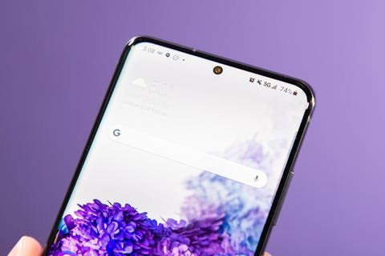

Samsung Galaxy S20
The newly released Samsung Galaxy S20 has become one of the most purchased phone in the recent weeks, due to its essential features. All the three models of the Galaxy S20 support the option to crank the screen's refresh rate u to 120Hz, double the standard 60Hz refresh rate that's considered normal.
That essentially means that S20's screen feels smoother, faster and more responsive when scrolling . I noticed this the most when checking notifications and scrolling through the app drawer.\ With this feature turned on, the display is so responsive that I barely have to pull up from the bottom of the screen to launch my app library.
In the past, I've struggled to see the appeal in smartphone screens with higher refresh rates. In those cases, I had been using phones with 90Hz refresh rates, which in my experience didn't feel like a noticeable enough jump. The switch from 60Hz to 120Hz is much more significant.
The Galaxy S20's screen also has a sleeker look with no notch cutout for the camera.
Starting with the Galaxy S10, Samsung began using a newly designed screen for its Galaxy S smartphones that nixes the top and bottom bezels and instead implements a small hole punch-shaped cutout near the top of the screen for its camera.
This, combined with the S20's slightly curved display, gives the front of the phone a sleeker and more sleamless look than the iphone 11 Pro, which has a much more noticaeable cutout near the top of the display for the phone's front camera and face ID sensors.
As a result, Samsung is able to fit a larger display on its device without making the phone itself all that much bigger.